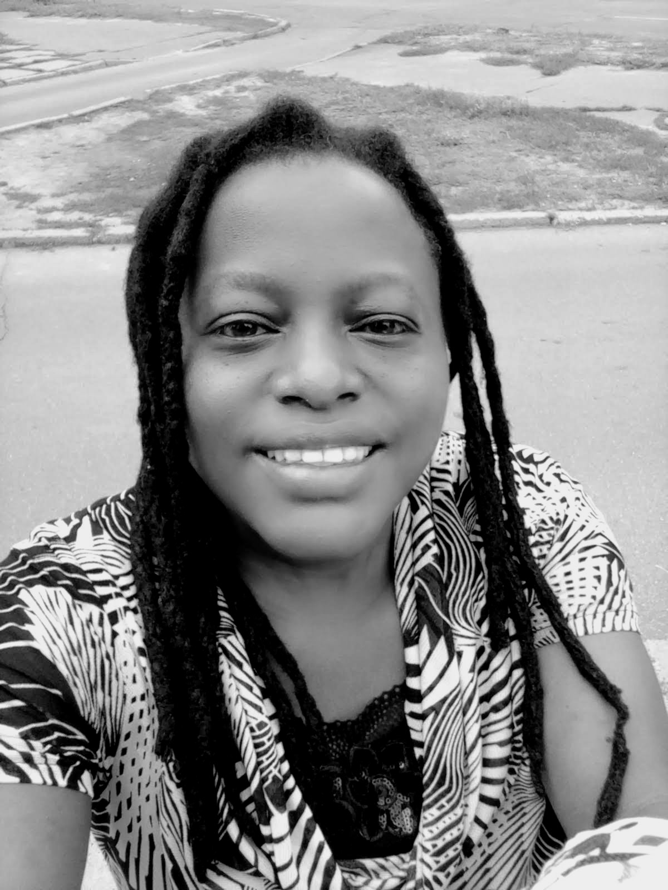

An Introduction
A Web developer student
Creating modern and resposive web design

Me in 30 seconds
I'm Josephine ,passionate in Creating and innovating.I love meeting new people.
Am adaptive to team work,hardwork ,patience and keen to details.Have learned that
to attain long term goals i need to work on short term goals.Thus why i joine Moringa
School to get skills which will enable to change my career path and be successful.
The world is going through unsual change which requires unsual steps,inorder to be
successful.
Family
Am a mother of one son,and I was born and raised in Machakos county,but currently
work in the city.I come from a family of eight; three boys and five boys.
Education & Work experience
I have a bachelors degree in business management procurement and supply option
from Mount Kenya University.Am aspiring to learn software development skills and
intergret this skills with business skills and change my career path.
Currently am working as a procurement officer at an auto company in Nairobi.
The company deals with accident repairs,panel beating,spray painting and body fabrication.
Teamwork is essential for better perfomance and efficiency.
The pandemic impacted my job in a negative way that my employer's business went down
and since had dependent on salary i found myself with no income.Thus I found myself back in
square one that having a family ,no income and no job opportunities available though am a graduate.
Its in this point where i decided to research on other career paths and found that with tech skills
i can work any where around the world remotely.Hence found that software development skills its important.
My hobbies are hiking and cooking, i love traditional food "Githeri".